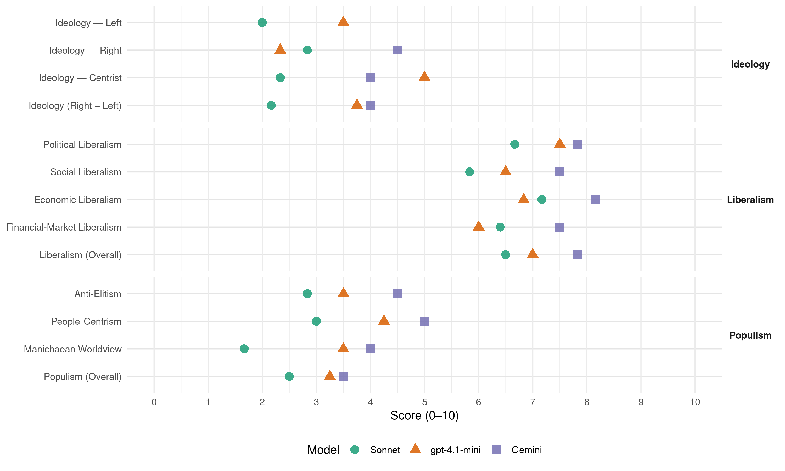

Nsi (Slovenia, 2018)
manifesto_id 97522_201806
Get full text: This site shows derived annotations and short verbatim quotes only. The full manifesto text is © Manifesto Project / WZB — obtain it via manifesto-project.wzb.eu using the manifesto_id above.
Headline scores
| Dimension | Sonnet | gpt-4.1-mini | Gemini |
|---|---|---|---|
| Populism (Overall) | 2.5 | 3.2 | 3.5 |
| Anti-Elitism | 2.8 | 3.5 | 4.5 |
| People-Centrism | 3.0 | 4.2 | 5.0 |
| Manichaean Worldview | 1.7 | 3.5 | 4.0 |
| Ideology (Right − Left) | 2.2 | 3.8 | 4.0 |
| Liberalism (Overall) | 6.5 | 7.0 | 7.8 |
| Political Liberalism | 6.7 | 7.5 | 7.8 |
| Social Liberalism | 5.8 | 6.5 | 7.5 |
| Economic Liberalism | 7.2 | 6.8 | 8.2 |
| Financial-Market Liberalism | 6.4 | 6.0 | 7.5 |
Evidence per dimension
Economic Liberalism
Gemini · score 9.0 · verified · chunk 1
“podpira in si prizadeva uveljaviti socialno tržno gospodarstvo”
ZA DEMOKRACIJO IN SOCIALNO TRŽNO GOSPODARSTVO NSi podpira in si prizadeva uveljaviti socialno tržno gospodarstvo. Vrednote socialno tržnega gospodarstva
Gemini · score 8.0 · verified · chunk 2
“zmanjšanje strme progresivne obdavčitve”
Cilj davčne reforme NSi je izboljšanje davčnega položaja vseh zavezancev, predvsem pa zmanjšanje strme progresivne obdavčitve, ki se odraža v visokih stroških
Gemini · score 8.0 · verified · chunk 3
“povezati šolski sistem z delodajalci”
praktičnega usposabljanja med izobraževanjem (povezati šolski sistem z delodajalci, zagotoviti boljši prehod med
Gemini · score 9.0 · verified · chunk 4
“Tržno gospodarstvo je pogoj, da podjetja razvijajo”
9.1. Začne se z gospodarstvom in zagotavljanjem konkurenčnosti Tržno gospodarstvo je pogoj, da podjetja razvijajo inovativne izdelke z dodano vrednostjo
Gemini · score 9.0 · verified · chunk 5
“deregulacijo države in gospodarstva”
nemški vlagatelji od oblasti zahtevajo odpravo birokratizacije ter deregulacijo države in gospodarstva. Med nalogami, ki bi morale predstavljati
Gemini · score 6.0 · verified · chunk 6
“davčne olajšave za delodajalce, ki zaposlujejo”
Prav tako predlagamo davčne olajšave za delodajalce, ki zaposlujejo pripadnike prostovoljnih organizacij, delujočih v sistemu
gpt-4.1-mini · score 7.0 · verified · chunk 1
“močno gospodarstvo z več delovnimi mesti. Najboljša socialna politika je močno gospodarstvo z več delovnimi mesti”
MOČNO GOSPODARSTVO. Imamo rešitve za nižje davke, manj birokracije in modernizacijo izobraževanja. Več delovnih mest bo večjemu številu ljudi omogočilo boljše življenje. Najboljša socialna politika je močno gospodarstvo z več delovnimi mesti.
gpt-4.1-mini · score 6.0 · verified · chunk 2
“Za izboljšanje konkurenčnosti slovenskega gospodarstva je nujno zagotoviti izboljšanje davčnih pogojev za delo visoko kvalificiranih oseb”
Za izboljšanje konkurenčnosti slovenskega gospodarstva je nujno zagotoviti izboljšanje davčnih pogojev za delo visoko kvalificiranih oseb. Njihovo davčno breme je treba nekoliko bolj približati obremenitvi v konkurenčnih državah.
gpt-4.1-mini · score 7.0 · verified · chunk 3
“Spodbude na različnih področjih, torej tudi na področju trga dela, naj se preusmerijo v (davčne) olajšave”
Preveč je namreč programov subvencij, ki so drage in imajo kratkotrajne učinke, hkrati pa vršijo velik pritisk na državni proračun ter vzdržnost javnih financ. Spodbude na različnih področjih, torej tudi na področju trga dela, naj se preusmerijo v (davčne) olajšave.
gpt-4.1-mini · score 7.0 · verified · chunk 4
“tržno gospodarstvo je pogoj, da podjetja razvijajo inovativne izdelke”
Tržno gospodarstvo je pogoj, da podjetja razvijajo inovativne izdelke z dodano vrednostjo za uporabnike. Konkurenca je v korist kupcem in sili podjetja v učinkovito rabo produkcijskih sredstev, zagotavljanje kakovosti ter nižanje cen za uporabnike. Podjetja, ki stalno razvijajo in izboljšujejo svoje produkte, imajo v konkurenčnem okolju najboljše možnosti preživetja in povečujejo blaginjo.
gpt-4.1-mini · score 7.0 · verified · chunk 5
“povečali bomo izkoristek IKT v vsakdanjem življenju”
Velik poudarek in sredstva bomo namenili področju biotehnologije. Zavzemali se bomo za odpiranje novih in tudi v prihodnosti varnih delovnih mest. V to sodijo zlasti delovna mesta na področju digitalizacije, biotehnologije, naprednih okoljskih tehnologij ter na področju zdravstvenih in storitvenih dejavnosti. Povečali bomo izkoristek IKT v vsakdanjem življenju.
gpt-4.1-mini · score 7.0 · verified · chunk 6
“Podpiramo proizvodnjo kmetijskih pridelkov in živil, ki bodo zagotavljali varno, kakovostno, količinsko zadostno in cenovno dostopno hrano za prebivalstvo”
13.1.1. CILJI Povečanje kmetijske proizvodnje v segmentih z neizkoriščenim potencialom - Zavzemamo se za sodobno kmetijstvo, ki bo zagotovilo visoko stopnjo prehranske varnosti v Sloveniji. Podpiramo proizvodnjo kmetijskih pridelkov in živil, ki bodo zagotavljali varno, kakovostno, količinsko zadostno in cenovno dostopno hrano za prebivalstvo. Naš cilj je vsaj ohraniti sedanje stopnje živalske proizvodnje in povečati proizvodnjo svinjskega mesa, predvsem pa rastlinsko pridelavo (nekatere poljščine npr. žito, sadje, grozdje ter vrtnine), kjer obstaja pomemben potencial za povečanje proizvodnje ob primernih pridelovalnih pogojih.
Sonnet · score 7.0 · verified · chunk 1
“nižje davke, manj birokracije”
MOČNO GOSPODARSTVO. Imamo rešitve za nižje davke, manj birokracije in modernizacijo izobraževanja.
Sonnet · score 7.0 · verified · chunk 2
“zmanjšanje strme progresivne obdavčitve”
Cilj davčne reforme NSi je izboljšanje davčnega položaja vseh zavezancev, predvsem pa zmanjšanje strme progresivne obdavčitve, ki se odraža v visokih stroških delodajalca
Sonnet · score 7.0 · verified · chunk 3
“Slovenija sodi med države EU, ki so najmanj privlačne za neposredne tuje investicije”
Slovenija sodi med države EU, ki so najmanj privlačne za neposredne tuje investicije, čeprav ima dobro izobraženo prebivalstvo, solidno infrastrukturo in geografsko lego blizu preskrbovalnih poti razvitega dela Evrope.
Sonnet · score 8.0 · verified · chunk 4
“Tržno gospodarstvo je pogoj”
9.1. Začne se z gospodarstvom in zagotavljanjem konkurenčnosti Tržno gospodarstvo je pogoj, da podjetja razvijajo inovativne izdelke z dodano vrednostjo
Sonnet · score 8.0 · verified · chunk 5
“deregulacijo države in gospodarstva”
nemški vlagatelji od oblasti zahtevajo odpravo birokratizacije ter deregulacijo države in gospodarstva
Sonnet · score 6.0 · verified · chunk 6
“vzpodbudna davčna politika (politika nižjih in preglednejših davkov”
Zavedamo se, da vzpodbudna davčna politika (politika nižjih in preglednejših davkov in trošarin), omogoča dodatne zaposlitve na kmetijah
Financial-Market Liberalism
Gemini · score 8.0 · verified · chunk 1
“del skupne evropske monetarne unije”
svetovne integracije. Smo del skupne evropske monetarne unije in s pomočjo evra smo tudi
Gemini · score 7.0 · verified · chunk 3
“naložbeno politiko pokojninskih skladov”
v drugi pokojninski naložbeni steber in naložbeno politiko pokojninskih skladov, oblikovanih znotraj drugega stebra.
gpt-4.1-mini · score 6.0 · verified · chunk 1
“Smo del skupne evropske monetarne unije in s pomočjo evra smo tudi v težkih časih zmogli ohraniti svojo denarno stabilnost”
A vendar smo v tem kratkem času uspeli priti v elitno družbo evropskih narodov, zavezništvo NATO in še v nekatere druge pomembne svetovne integracije. Smo del skupne evropske monetarne unije in s pomočjo evra smo tudi v težkih časih zmogli ohraniti svojo denarno stabilnost. Finančna in gospodarska kriza izpred nekaj let sta mlado slovensko demokracijo in njeno gospodarstvo postavili na resno preizkušnjo.
gpt-4.1-mini · score 6.0 · verified · chunk 2
“Upravljanje drugega (obveznega) pokojninskega (naložbenega) stebra se, z javnim razpisom, razporedi med slovenske zavarovalnice”
Upravljanje drugega (obveznega) pokojninskega (naložbenega) stebra se, z javnim razpisom, razporedi med slovenske zavarovalnice; ZPIZ pri tem ne sodeluje. Zbrana sredstva se plasirajo na naslednji način: v državne obveznice v višini 40 %,v obveznice Evropske unije v višini 40 %,v druge oblike (delnice, depoziti) v višini 20 %.
gpt-4.1-mini · score 6.0 · verified · chunk 3
“Naložbena politika obveznih naložbenih pokojninskih stebrov bi morala biti vsebina spremembe pravil pakta za stabilnost in rast EU”
Naložbena politika obveznih naložbenih pokojninskih stebrov bi morala biti vsebina spremembe pravil pakta za stabilnost in rast EU. V predlaganem drugem pokojninskem stebru je predvidena relativno varna pokojninska naložbena shema, ki ima naslednjo sestavno naložb: državne obveznice Republike Slovenije (v višini 40 %), obveznice Evropske unije (v višini 40 %) in v druge oblike (delnice, depoziti v višini 20 %).
gpt-4.1-mini · score 6.0 · verified · chunk 4
“davčni sistem, ki bo omogočil konkurenčnost gospodarstva”
Na zagotavljanje konkurenčnosti celotnega gospodarstva v globalnem merilu ima velik vpliv davčna in socialna politika. V Sloveniji je obdavčitev dela nadpovprečna predvsem pri višjih plačah, medtem ko je pri najnižjih plačah še nekoliko bolj zmerna. Ker v višje dohodkovne razrede spadajo visoko izobraženi in najbolj produktivni, trenutna davčna politika dejansko vzpodbuja le najslabše plačana delovna mesta, medtem ko tista z najvišjo dodano vrednostjo obremenjuje.
Sonnet · score 6.0 · verified · chunk 1
“vložku zasebnega kapitala v zdravstveni sistem”
ne more odreči načrtovanemu in usmerjenemu ter dobro uravnavanemu vložku zasebnega kapitala v zdravstveni sistem
Sonnet · score 6.0 · verified · chunk 2
“tristebrni pokojninski sistem bo vplival tudi na večjo trdnost finančnega sistema”
tristebrni pokojninski sistem je finančno varnejši, saj bo temeljil na razpršenosti finančnih naložb in tristebrni pokojninski sistem bo vplival tudi na večjo trdnost finančnega sistema
Sonnet · score 6.0 · verified · chunk 3
“Znesek pokojninskih prihrankov iz drugega stebra se, ob upokojitvi zavarovanca, lahko prenese na poljubno zavarovalnico”
Znesek pokojninskih prihrankov iz drugega stebra se, ob upokojitvi zavarovanca, lahko prenese na poljubno zavarovalnico, ki posamezniku ponudi najboljše pogoje za izplačilo pokojninske rente.
Sonnet · score 7.0 · verified · chunk 4
“banke, sodišča in cenilci pa bodo lahko uporabili podatke za poslovne namene”
Zakon o množičnem vrednotenju nepremičnin bo omogočil podatke za javni namen… za zasebni namen, banke, sodišča in cenilci pa bodo lahko uporabili podatke za poslovne namene.
Sonnet · score 7.0 · verified · chunk 5
“spletnega bančništva, spletnega nakupovanja”
Med najbolj kritičnimi kazalci je izpostavljena uporaba interneta, digitalne veščine, uporaba storitev e-javne uprave, uporaba spletnega bančništva, spletnega nakupovanja in prodaja preko interneta
Political Liberalism
Gemini · score 8.0 · verified · chunk 1
“demokratične parlamentarne demokracije”
družbene probleme v okviru demokratične parlamentarne demokracije in socialno tržnega gospodarstva.
Gemini · score 8.0 · verified · chunk 2
“Zanesljivo ter učinkovito pravosodje je nujno”
pravosodje eden izmed najpomembnejših državotvornih elementov naše države. Zanesljivo ter učinkovito pravosodje je nujno za zagotavljanje varnosti
Gemini · score 8.0 · verified · chunk 3
“domoljubje, državljansko pismenost in demokratične vrednote”
Predlagani ukrepi:vzgajati in izobraževati za domoljubje, državljansko pismenost in demokratične vrednote; v srednje šole uvesti
Gemini · score 8.0 · verified · chunk 4
“aktivno in demokratično udejstvovanje posameznika”
vsebin in obvez, kar je temelj za aktivno in demokratično udejstvovanje posameznika. Predlagani ukrepi:vzgajati in izobraževati
Gemini · score 8.0 · verified · chunk 5
“pravne države ter stabilnega političnega”
evropske integracije. Osnova evropskega povezovanja je odklanjanje vseh treh totalitarizmov, zagotavljanje pravne države ter stabilnega političnega, varnostnega in gospodarskega okolja
Gemini · score 7.0 · verified · chunk 6
“pravico lokalnih skupnosti, da samostojno urejajo”
Skladno z načelom subsidiarnosti se zavzemamo za pravico lokalnih skupnosti, da samostojno urejajo, upravljajo in imajo v svoji pristojnosti vse javne zadeve
gpt-4.1-mini · score 8.0 · verified · chunk 1
“Vladavina prava je predpogoj za uspešno delovanje socialne države”
SODOBNA IN V PRIHODNOST USMERJENA DRŽAVA Vladavina prava je predpogoj za uspešno delovanje socialne države, zato bomo vztrajali na izboljšanju delovanja pravne države (prilagoditev zakonodaje) in vzdrževanju pridobitev evropske socialne države. Uspešno gospodarstvo je v veliki meri odvisno tudi od učinkovite javne uprave.
gpt-4.1-mini · score 8.0 · verified · chunk 2
“Zanesljivo ter učinkovito pravosodje je nujno za zagotavljanje varnosti, nemoten potek poslovnih procesov, varovanje človekovih pravic in temeljnih svoboščin”
Zanesljivo ter učinkovito pravosodje je nujno za zagotavljanje varnosti, nemoten potek poslovnih procesov, varovanje človekovih pravic in temeljnih svoboščin, zakonito delovanje javne uprave, hitro urejanje pravnih razmerij med državljani, pravno varnost in predvidljivost ter v splošnem za naše skupno sobivanje.
gpt-4.1-mini · score 7.0 · verified · chunk 3
“Ustava Republike Slovenije postavlja družino visoko med vrednotami naše države, saj določa, da država varuje družino, materinstvo, očetovstvo, otroke in mladino ter ustvarja za to varstvo potrebne razmere”
Ustava Republike Slovenije postavlja družino visoko med vrednotami naše države, saj določa, da država varuje družino, materinstvo, očetovstvo, otroke in mladino ter ustvarja za to varstvo potrebne razmere. Ta določbo zelo dobro dopolnjuje tudi besedilo, da država zagotavlja možnosti za uresničevanje te svoboščine in ustvarja razmere, ki omogočajo staršem, da se odločajo za rojstva svojih otrok.
gpt-4.1-mini · score 7.0 · verified · chunk 4
“vzgajati in izobraževati za domoljubje, državljansko pismenost in demokratične vrednote”
Predlagani ukrepi:vzgajati in izobraževati za domoljubje, državljansko pismenost in demokratične vrednote; v srednje šole uvesti vzgojni načrt, ki temelji na vrednotah vzgojnih dejavnosti; aktivno vključevati starše v sooblikovanje vzgojnih in drugih dejavnosti šole, ki dvigajo kakovost (določiti dolžnosti staršev, postaviti jasne meje poseganja staršev v pedagoško stroko); omogočiti staršem in otrokom možnost izbire, zato podpiramo pluralnost ustanov in pedagogik;
gpt-4.1-mini · score 8.0 · verified · chunk 5
“Pravni red s predpisi določi pravice in dolžnosti ter opredeli državne institucije”
Državljani preko volitev zakonodajni in izvršni veji oblasti zaupajo odločanje o vzpostavitvi pravnega reda države. Pravni red s predpisi določi pravice in dolžnosti ter opredeli državne institucije. Za vzpostavitev primernega okvirja za življenje in gospodarjenje ljudi mora biti uveljavljanje pravic in dolžnosti preko delovanja državnih institucij zakonito, hitro in učinkovito.
gpt-4.1-mini · score 7.0 · verified · chunk 6
“Skladno z načelom subsidiarnosti se zavzemamo za pravico lokalnih skupnosti, da samostojno urejajo, upravljajo in imajo v svoji pristojnosti vse javne zadeve”
14.1. Lokalna samouprava V Novi Sloveniji podpiramo razvoj lokalne samouprave in prizadevanja za skladen regionalni razvoj vseh predelov Slovenije. Skladno z načelom subsidiarnosti se zavzemamo za pravico lokalnih skupnosti, da samostojno urejajo, upravljajo in imajo v svoji pristojnosti vse javne zadeve iz življenja in dela prebivalcev na njihovem območju ter da ne posegajo v pravice in obveznosti drugih lokalnih skupnosti.
Sonnet · score 7.0 · verified · chunk 1
“demokratične parlamentarne demokracije”
tiste politične stranke, ki imajo primerne rešitve za pereče družbene probleme v okviru demokratične parlamentarne demokracije
Sonnet · score 7.0 · verified · chunk 2
“dejansko neodvisno pravosodje brez vpliva vsakokratne oblasti”
Dejansko neodvisno pravosodje brez vpliva vsakokratne oblasti je pogoj za zagotovitev vladavine prava.
Sonnet · score 6.0 · verified · chunk 3
“vzgajati in izobraževati za domoljubje, državljansko pismenost in demokratične vrednote”
Predlagani ukrepi: vzgajati in izobraževati za domoljubje, državljansko pismenost in demokratične vrednote; v srednje šole uvesti vzgojni načrt, ki temelji na vrednotah vzgojnih dejavnosti
Sonnet · score 7.0 · verified · chunk 4
“demokratične vrednote”
vzgajati in izobraževati za domoljubje, državljansko pismenost in demokratične vrednote; v srednje šole uvesti vzgojni načrt
Sonnet · score 7.0 · verified · chunk 5
“demokratičnega nadzora nad njenim delom”
Neodvisno delovanje policije in spoštovanje demokratičnega nadzora nad njenim delom – Delo policije mora biti neodvisno in nepolitično
Sonnet · score 6.0 · verified · chunk 6
“depolitizirati, strokovno nadgraditi in pomladiti”
Posledično je potrebno dodobra reorganizirati obveščevalno varnostne službe, jih depolitizirati, strokovno nadgraditi in pomladiti. Zagotoviti je potrebno ustrezna sredstva
Liberalism (Overall)
Gemini · score 8.0 · verified · chunk 1
“podpira in si prizadeva uveljaviti socialno tržno gospodarstvo”
ZA DEMOKRACIJO IN SOCIALNO TRŽNO GOSPODARSTVO NSi podpira in si prizadeva uveljaviti socialno tržno gospodarstvo. Vrednote socialno tržnega gospodarstva
Gemini · score 8.0 · verified · chunk 2
“Zanesljivo ter učinkovito pravosodje je nujno”
pravosodje eden izmed najpomembnejših državotvornih elementov naše države. Zanesljivo ter učinkovito pravosodje je nujno za zagotavljanje varnosti
Gemini · score 8.0 · verified · chunk 3
“povezati šolski sistem z delodajalci”
praktičnega usposabljanja med izobraževanjem (povezati šolski sistem z delodajalci, zagotoviti boljši prehod med
Gemini · score 8.0 · verified · chunk 4
“Tržno gospodarstvo je pogoj, da podjetja razvijajo”
9.1. Začne se z gospodarstvom in zagotavljanjem konkurenčnosti Tržno gospodarstvo je pogoj, da podjetja razvijajo inovativne izdelke z dodano vrednostjo
Gemini · score 8.0 · verified · chunk 5
“deregulacijo države in gospodarstva”
nemški vlagatelji od oblasti zahtevajo odpravo birokratizacije ter deregulacijo države in gospodarstva. Med nalogami, ki bi morale predstavljati
Gemini · score 7.0 · verified · chunk 6
“pravico lokalnih skupnosti, da samostojno urejajo”
Skladno z načelom subsidiarnosti se zavzemamo za pravico lokalnih skupnosti, da samostojno urejajo, upravljajo in imajo v svoji pristojnosti vse javne zadeve
gpt-4.1-mini · score 7.0 · verified · chunk 1
“Vrednote socialno tržnega gospodarstva temeljijo na načelih svobode, uspešnosti, odgovornosti in solidarnosti”
NSi podpira in si prizadeva uveljaviti socialno tržno gospodarstvo. Vrednote socialno tržnega gospodarstva temeljijo na načelih svobode, uspešnosti, odgovornosti in solidarnosti. To je kombinacija osebne uspešnosti in socialne pravičnosti do tistih, ki za lastno blagostanje ne morejo poskrbeti sami. Država mora zagotoviti pogoje za konkurenčnost, državne ustanove pa morajo vršiti učinkovit in pregleden nadzor nad zakonitostjo gospodarskih dejavnosti.
gpt-4.1-mini · score 7.0 · verified · chunk 2
“Zanesljivo ter učinkovito pravosodje je nujno za zagotavljanje varnosti, nemoten potek poslovnih procesov, varovanje človekovih pravic in temeljnih svoboščin”
Zanesljivo ter učinkovito pravosodje je nujno za zagotavljanje varnosti, nemoten potek poslovnih procesov, varovanje človekovih pravic in temeljnih svoboščin, zakonito delovanje javne uprave, hitro urejanje pravnih razmerij med državljani, pravno varnost in predvidljivost ter v splošnem za naše skupno sobivanje.
gpt-4.1-mini · score 7.0 · verified · chunk 3
“Ustava Republike Slovenije postavlja družino visoko med vrednotami naše države, saj določa, da država varuje družino, materinstvo, očetovstvo, otroke in mladino ter ustvarja za to varstvo potrebne razmere”
Ustava Republike Slovenije postavlja družino visoko med vrednotami naše države, saj določa, da država varuje družino, materinstvo, očetovstvo, otroke in mladino ter ustvarja za to varstvo potrebne razmere. Ta določbo zelo dobro dopolnjuje tudi besedilo, da država zagotavlja možnosti za uresničevanje te svoboščine in ustvarja razmere, ki omogočajo staršem, da se odločajo za rojstva svojih otrok.
gpt-4.1-mini · score 7.0 · verified · chunk 4
“tržno gospodarstvo je pogoj, da podjetja razvijajo inovativne izdelke”
Tržno gospodarstvo je pogoj, da podjetja razvijajo inovativne izdelke z dodano vrednostjo za uporabnike. Konkurenca je v korist kupcem in sili podjetja v učinkovito rabo produkcijskih sredstev, zagotavljanje kakovosti ter nižanje cen za uporabnike. Podjetja, ki stalno razvijajo in izboljšujejo svoje produkte, imajo v konkurenčnem okolju najboljše možnosti preživetja in povečujejo blaginjo.
gpt-4.1-mini · score 7.0 · verified · chunk 5
“Pravni red s predpisi določi pravice in dolžnosti ter opredeli državne institucije”
Državljani preko volitev zakonodajni in izvršni veji oblasti zaupajo odločanje o vzpostavitvi pravnega reda države. Pravni red s predpisi določi pravice in dolžnosti ter opredeli državne institucije. Za vzpostavitev primernega okvirja za življenje in gospodarjenje ljudi mora biti uveljavljanje pravic in dolžnosti preko delovanja državnih institucij zakonito, hitro in učinkovito.
gpt-4.1-mini · score 7.0 · verified · chunk 6
“Podpiramo proizvodnjo kmetijskih pridelkov in živil, ki bodo zagotavljali varno, kakovostno, količinsko zadostno in cenovno dostopno hrano za prebivalstvo”
13.1.1. CILJI Povečanje kmetijske proizvodnje v segmentih z neizkoriščenim potencialom - Zavzemamo se za sodobno kmetijstvo, ki bo zagotovilo visoko stopnjo prehranske varnosti v Sloveniji. Podpiramo proizvodnjo kmetijskih pridelkov in živil, ki bodo zagotavljali varno, kakovostno, količinsko zadostno in cenovno dostopno hrano za prebivalstvo. Naš cilj je vsaj ohraniti sedanje stopnje živalske proizvodnje in povečati proizvodnjo svinjskega mesa, predvsem pa rastlinsko pridelavo (nekatere poljščine npr. žito, sadje, grozdje ter vrtnine), kjer obstaja pomemben potencial za povečanje proizvodnje ob primernih pridelovalnih pogojih.
Sonnet · score 6.0 · verified · chunk 1
“socialno tržno gospodarstvo”
NSi podpira in si prizadeva uveljaviti socialno tržno gospodarstvo. Vrednote socialno tržnega gospodarstva temeljijo na načelih svobode
Sonnet · score 7.0 · verified · chunk 2
“zmanjšanje strme progresivne obdavčitve”
Cilj davčne reforme NSi je izboljšanje davčnega položaja vseh zavezancev, predvsem pa zmanjšanje strme progresivne obdavčitve
Sonnet · score 6.0 · verified · chunk 3
“Spodbude na različnih področjih, torej tudi na področju trga dela, naj se preusmerijo v (davčne) olajšave”
Preveč je namreč programov subvencij, ki so drage in imajo kratkotrajne učinke, hkrati pa vršijo velik pritisk na državni proračun ter vzdržnost javnih financ. Spodbude na različnih področjih, torej tudi na področju trga dela, naj se preusmerijo v (davčne) olajšave.
Sonnet · score 7.0 · verified · chunk 4
“Tržno gospodarstvo je pogoj”
Tržno gospodarstvo je pogoj, da podjetja razvijajo inovativne izdelke z dodano vrednostjo za uporabnike. Konkurenca je v korist kupcem
Sonnet · score 7.0 · verified · chunk 5
“deregulacijo države in gospodarstva”
nemški vlagatelji od oblasti zahtevajo odpravo birokratizacije ter deregulacijo države in gospodarstva
Sonnet · score 6.0 · verified · chunk 6
“vzpodbudna davčna politika (politika nižjih in preglednejših davkov”
Zavedamo se, da vzpodbudna davčna politika (politika nižjih in preglednejših davkov in trošarin), omogoča dodatne zaposlitve na kmetijah
Anti-Elitism
Gemini · score 4.0 · verified · chunk 1
“Vlada Mira Cerarja se žal ni spopadla”
kakšna bo prihodnost naših otrok. IZZIVI KAKO POSODOBITI DRŽAVO IN SE PRIPRAVITI NA PRIHODNOST Vlada Mira Cerarja se žal ni spopadla s ključnimi problemi, ki Slovenijo pestijo
Gemini · score 5.0 · verified · chunk 2
“večji kriminalci slovenskemu pravosodju največkrat uspešno izmikajo”
povprečen državljan hitro kaznovan tudi za najmanjši prekršek, se večji kriminalci slovenskemu pravosodju največkrat uspešno izmikajo. Na enakopravni obravnavi
Gemini · score 5.0 · verified · chunk 3
“političnemu preživetju sedanje vladne koalicije”
namenjen zgolj sedanjim upokojencem, še bolj pa političnemu preživetju sedanje vladne koalicije. Zato bi bila primernejša
Gemini · score 4.0 · verified · chunk 6
“prepletenost s politiko in na koncu še stavka”
varnostni sistem je v celotnem varnostnem sistemu v največji krizi. Številne afere, prepletenost s politiko in na koncu še stavka kažejo na velike težave tega sistema.
gpt-4.1-mini · score 3.0 · verified · chunk 1
“kritični do delitev političnega prostora po starih kriterijih”
NSi je odprta stranka, zavezana odprti družbi, katere ambicija je blagostanje (dobrobit) vseh ljudi. Verjamemo, da je pošteno delo temelj človekove samorealizacije in družbenega ugleda. Hkrati se NSi zaveda, da moč države izvira predvsem iz močnega srednjega sloja in človekove ustvarjalnosti. Politika je legitimna le, če zagotavlja dobrobit posameznika, družbe, države in mednarodne skupnosti. Izhajamo iz posameznika in njegove odgovornosti za svobodo in dobrobit vseh. Svoboden in odgovoren posameznik je še posebej dragocen. Prizadevali si bomo, da bomo Slovenci eden takšnih narodov in da Slovenija postane ena izmed 15 najbolj razvitih držav na svetu. SODOBNA IN V PRIHODNOST USMERJENA DRŽAVA Vladavina prava je predpogoj za uspešno delovanje socialne države, zato bomo vztrajali na izboljšanju delovanja pravne države (prilagoditev zakonodaje) in vzdrževanju pridobitev evropske socialne države. Uspešno gospodarstvo je v veliki meri odvisno tudi od učinkovite javne uprave. Točka njunega srečanja je enostavno in pregledno poslovno okolje (vitka država, utemeljena na znanju zaposlenih in sodobnih tehnologijah) ter odgovorno podjetništvo, ki ne računa na pomoč države, ampak na zagotovitev ustreznih pogojev za konkurenčno poslovanje. Tako mora javna uprava bistveno poenostaviti svoje poslovanje (premik od birokratske organizacije k »servisu javnih storitev«), gospodarstvo pa se mora pripraviti na »poslovanje brez državne finančne infuzije«. Spremenili bomo prakso, da »če delaš po predpisih, ti vse pobere država, zato je bolje kršiti zakone«, saj je prav takšna logika Slovenijo pripeljala v še vedno trajajočo nezavidljivo gospodarsko in družbeno stanje.
gpt-4.1-mini · score 6.0 · verified · chunk 2
“Slovenski državljani pa imajo, žal, pogosto občutek, da ta človekova pravica in temeljna svoboščina v resničnem življenju ne zaživi v polnosti”
Slovenska ustava določa, da smo pred zakonom vsi enaki. Slovenski državljani pa imajo, žal, pogosto občutek, da ta človekova pravica in temeljna svoboščina v resničnem življenju ne zaživi v polnosti. Med tem, ko je povprečen državljan hitro kaznovan tudi za najmanjši prekršek, se večji kriminalci slovenskemu pravosodju največkrat uspešno izmikajo.
gpt-4.1-mini · score 3.0 · verified · chunk 3
“sindikati, ki bi morali biti naravni zagovorniki interesov delavcev (zaposlenih), se dejansko na številne pojave izkoriščanja zaposlenih odzivajo prepozno, neprimerno, odkrito pa se povezujejo tudi s predstavniki skrajne politične levice”
Sindikatih, ki bi morali biti naravni zagovorniki interesov delavcev (zaposlenih), se dejansko na številne pojave izkoriščanja zaposlenih odzivajo prepozno, neprimerno, odkrito pa se povezujejo tudi s predstavniki skrajne politične levice v Sloveniji.
gpt-4.1-mini · score 2.0 · verified · chunk 4
“umik države in politike iz gospodarstva”
Po oceni Evropske komisije pa skupni gospodarski stroški znašajo 13 milijard evrov oziroma 6.600 evrov na državljana. Država sicer mora izvajati svoje naloge, med katere pa gotovo ne spada izvajanje podjetniške dejavnosti na trgu. Zagovarjamo umik države in politike iz gospodarstva, smiselno pa je, da država obdrži večinsko lastništvo v strateških podjetjih na področju prometne, transportne in logistične infrastrukture ter elektroenergetskega sistema.
Sonnet · score 3.0 · verified · chunk 1
“sistem finančne oligarhije”
Spontani scenarij, ki v končni posledici vodi v »sistem finančne oligarhije«. Zaradi izogibanja plačila davkov
Sonnet · score 4.0 · verified · chunk 2
“večji kriminalci slovenskemu pravosodju največkrat uspešno izmikajo”
Med tem, ko je povprečen državljan hitro kaznovan tudi za najmanjši prekršek, se večji kriminalci slovenskemu pravosodju največkrat uspešno izmikajo.
Sonnet · score 4.0 · verified · chunk 3
“vlade socialistov popolnoma ignorirajo to področje”
V času, ko v Sloveniji že čutimo vpliv staranja prebivalstva, vlade socialistov popolnoma ignorirajo to področje. UMAR opozarja na povečevanje števila starejših
Sonnet · score 2.0 · verified · chunk 4
“Umik politike iz gospodarstva”
9.2. Umik politike iz gospodarstva Slovenija je po podatkih Evropske komisije ena od držav z najvišjo ravnjo državnega lastništva v Evropi.
Sonnet · score 2.0 · verified · chunk 5
“vplivnih interesnih skupin, ki si uspejo”
Obsežna regulacija je pogosto zgolj rezultat vplivnih interesnih skupin, ki si uspejo preko nje zagotoviti privilegiran gospodarski položaj
Sonnet · score 2.0 · verified · chunk 6
“depolitizirati, strokovno nadgraditi in pomladiti”
Posledično je potrebno dodobra reorganizirati obveščevalno varnostne službe, jih depolitizirati, strokovno nadgraditi in pomladiti.
Ideology — Centrist
Gemini · score 3.0 · verified · chunk 1
“Ljudem želimo vrniti dostojanstvo”
Državljani moramo biti pred zakonom enaki. Ljudem želimo vrniti dostojanstvo in občutek pripadnosti domovini.
Gemini · score 5.0 · verified · chunk 2
“večji kriminalci slovenskemu pravosodju največkrat uspešno izmikajo”
povprečen državljan hitro kaznovan tudi za najmanjši prekršek, se večji kriminalci slovenskemu pravosodju največkrat uspešno izmikajo. Na enakopravni obravnavi
gpt-4.1-mini · score 6.0 · verified · chunk 1
“kritični do delitev političnega prostora po starih kriterijih: levo – desno, konzervativno-liberalno ter načelno-pragmatično. NSi takšne delitve presega”
NSi se opredeljuje kot stranka vrednot, ki deluje po načelih krščanske demokracije. Prav za to usmeritev je značilno, da je po drugi svetovni vojni popeljala Evropo po poti miru, dialoga, sodelovanja in napredka. Stavimo na delo, poštenost in odgovornost, na temeljne etične in krščanske vrednote. Pri svojem političnem delovanju smo kritični do delitev političnega prostora po starih kriterijih: levo – desno, konzervativno-liberalno ter načelno-pragmatično. NSi takšne delitve presega, saj v današnjem evropskem političnem prostoru ne dajejo posebne dodane vrednosti.
gpt-4.1-mini · score 6.0 · verified · chunk 2
“Država mora biti učinkovit servis državljanov”
Država mora pomagati pri urejanju pravnih zadev. V vseh primerih, ko se predpišejo nova pravila z zahtevnimi in zamudnimi postopki, od urejanja osebnih in nepremičninskih stanj in uradnih evidenc, do izdajanja soglasij in dovoljenj ali urejanja finančnih poslov, pa tudi pred pravosodnimi organi, mora biti državljanom zagotovljena ustrezna, splošno dostopna in brezplačna pomoč uradnikov in drugih izvajalcev. Država mora biti učinkovit servis državljanov.
gpt-4.1-mini · score 4.0 · verified · chunk 3
“Izhaja iz podmene aktivnega državljana in osebne odgovornosti posameznika za njegov gmotni položaj”
Predlog pokojninske reforme NSi predstavlja prvo resno strukturno reformo v Republiki Sloveniji po njeni osamosvojitvi leta 1991. Izhaja iz podmene aktivnega državljana in osebne odgovornosti posameznika za njegov gmotni položaj.
gpt-4.1-mini · score 4.0 · verified · chunk 4
“pluralnost ustanov in pedagogik”
aktivno vključevati starše v sooblikovanje vzgojnih in drugih dejavnosti šole, ki dvigajo kakovost (določiti dolžnosti staršev, postaviti jasne meje poseganja staršev v pedagoško stroko); omogočiti staršem in otrokom možnost izbire, zato podpiramo pluralnost ustanov in pedagogik; oblikovati lestvico za vrtce z manjšim številom plačnih razredov ter tako zmanjšati progresivnost plačevanja za starše; načrtno uvesti in krepiti etične vsebine, razvoj celostne osebnosti.
Sonnet · score 4.0 · verified · chunk 1
“stranke vrednot, ki deluje po načelih”
Nova Slovenija se opredeljuje kot stranke vrednot, ki deluje po načelih krščanske demokracije.
Sonnet · score 2.0 · verified · chunk 2
“Zakon mora biti enak za vse”
NSi si bo prizadevala, da to ne bo le politično geslo, ampak način delovanja na vseh področjih
Sonnet · score 2.0 · verified · chunk 3
“Izhaja iz podmene aktivnega državljana in osebne odgovornosti posameznika”
Predlog pokojninske reforme NSi predstavlja prvo resno strukturno reformo v Republiki Sloveniji po njeni osamosvojitvi leta 1991. Izhaja iz podmene aktivnega državljana in osebne odgovornosti posameznika za njegov gmotni položaj.
Sonnet · score 2.0 · verified · chunk 4
“Umik politike iz gospodarstva”
9.2. Umik politike iz gospodarstva Slovenija je po podatkih Evropske komisije ena od držav z najvišjo ravnjo državnega lastništva v Evropi.
Sonnet · score 2.0 · verified · chunk 5
“Delovanje uradnika ne sme biti osredotočeno”
Delovanje uradnika ne sme biti osredotočeno na vprašanje »zakaj nekaj ni mogoče«, ampak na vprašanje »kako ideje državljanov v zakonskem roku čim hitreje uresničiti«
Sonnet · score 2.0 · verified · chunk 6
“potreben razmislek, kako bomo ta načela uveljavili”
ker ima Evropska unija področja… prvič urejena po enotnih načelih, je potreben razmislek, kako bomo ta načela uveljavili tudi v Sloveniji
Ideology — Left
gpt-4.1-mini · score 4.0 · verified · chunk 1
“socialno tržno gospodarstvo. Vrednote socialno tržnega gospodarstva temeljijo na načelih svobode, uspešnosti, odgovornosti in solidarnosti”
NSi podpira in si prizadeva uveljaviti socialno tržno gospodarstvo. Vrednote socialno tržnega gospodarstva temeljijo na načelih svobode, uspešnosti, odgovornosti in solidarnosti. To je kombinacija osebne uspešnosti in socialne pravičnosti do tistih, ki za lastno blagostanje ne morejo poskrbeti sami. Država mora zagotoviti pogoje za konkurenčnost, državne ustanove pa morajo vršiti učinkovit in pregleden nadzor nad zakonitostjo gospodarskih dejavnosti.
gpt-4.1-mini · score 4.0 · verified · chunk 2
“Proti klientelizmu, korupciji, gospodarskemu in finančnemu kriminalu boja ni mogoče dobiti s populističnimi vnaprejšnjimi obsodbami ljudi”
Proti klientelizmu, korupciji, gospodarskemu in finančnemu kriminalu boja ni mogoče dobiti s populističnimi vnaprejšnjimi obsodbami ljudi, ampak skozi dosledno zagovarjanje in krepitev pravne države, skozi takšen sistem zakonodaje in nadzora, ki bo zlorabe v največji možni meri onemogočal tako v gospodarstvu, kakor tudi v javni upravi in na drugih področjih.
gpt-4.1-mini · score 3.0 · verified · chunk 3
“sindikati, ki bi morali biti naravni zagovorniki interesov delavcev (zaposlenih), se dejansko na številne pojave izkoriščanja zaposlenih odzivajo prepozno, neprimerno, odkrito pa se povezujejo tudi s predstavniki skrajne politične levice”
Sindikatih, ki bi morali biti naravni zagovorniki interesov delavcev (zaposlenih), se dejansko na številne pojave izkoriščanja zaposlenih odzivajo prepozno, neprimerno, odkrito pa se povezujejo tudi s predstavniki skrajne politične levice v Sloveniji.
gpt-4.1-mini · score 3.0 · verified · chunk 4
“pošteno in pravično razdelitev bremen”
Ukrepi za nižje davke ter večjo produktivnost so usmerjeni k povečanju konkurenčnosti, spodbujanju podjetij in posameznikov, da s svojimi aktivnostmi ustvarjajo svojo in s tem tudi dodano vrednost skupnosti. Vzpostaviti želimo sodobno politiko, utemeljeno na nižjih davkih in olajšavah, ne na subvencijah. Prizadevamo si za pošteno in pravično razdelitev bremen ter povečanje učinkovitosti državne administracije.
Sonnet · score 2.0 · verified · chunk 1
“nižje davke, manj birokracije”
MOČNO GOSPODARSTVO. Imamo rešitve za nižje davke, manj birokracije in modernizacijo izobraževanja.
Sonnet · score 3.0 · verified · chunk 2
“omiliti revščino med upokojenkami z nizkimi pokojninami”
ker je ena glavnih prioritet NSi omiliti revščino med upokojenkami z nizkimi pokojninami, bi v prvi fazi gospodinjski dodatek
Sonnet · score 2.0 · verified · chunk 3
“omiliti revščino med upokojenkami z nizkimi pokojninami”
Ker je ena glavnih prioritet NSi omiliti revščino med upokojenkami z nizkimi pokojninami, bi v prvi fazi gospodinjski dodatek v višini 100,00 EUR mesečno prejela vsaka upokojenka
Sonnet · score 2.0 · verified · chunk 4
“Za enako delo moramo zagotoviti enako plačilo”
Čim prej moramo odpraviti tudi diskriminacijo, ko gre za plačilo programa zasebnih šol… Za enako delo moramo zagotoviti enako plačilo.
Sonnet · score 1.0 · verified · chunk 5
“čezmejni vplivi evropskega gospodarstva”
Čezmejni vplivi evropskega gospodarstva se morajo odražati v uravnovešenju pravic delavcev
Sonnet · score 2.0 · verified · chunk 6
“enake pravice kmečke populacije iz zdravstvenega”
zavzemali za enake pravice kmečke populacije iz zdravstvenega in pokojninskega zavarovanja ter socialnega varstva, kot jih imajo ostali državljani
Ideology (Right − Left)
Gemini · score 4.0 · verified · chunk 1
“Za ohranitev naroda bi potrebovali”
evropskimi državami pod povprečjem. Za ohranitev naroda bi potrebovali rodnost na ravni 2,1 rojenega
Gemini · score 5.0 · verified · chunk 2
“večji kriminalci slovenskemu pravosodju največkrat uspešno izmikajo”
povprečen državljan hitro kaznovan tudi za najmanjši prekršek, se večji kriminalci slovenskemu pravosodju največkrat uspešno izmikajo. Na enakopravni obravnavi
Gemini · score 3.0 · verified · chunk 6
“Migracije milijonov migrantov iz Afrike in Bližnjega vzhoda”
Spremenjene varnostne razmere zahtevajo učinkovit obveščevalno-varnostni sistem. Migracije milijonov migrantov iz Afrike in Bližnjega vzhoda se bodo nadaljevale, teroristične aktivnosti
gpt-4.1-mini · score 4.0 · verified · chunk 1
“NSi ima program in vizijo, poleg tega pa tudi pogumne ljudi, ki so rešitve sposobni uresničiti”
Razvoj političnih strank je pokazal, da je stranke danes bolje, kot na leve in desne, ločevati na tiste z jasnim programom in konkretnimi rešitvami ter na tiste, ki tega nimajo. NSi ima program in vizijo, poleg tega pa tudi pogumne ljudi, ki so rešitve sposobni uresničiti.
gpt-4.1-mini · score 5.0 · verified · chunk 2
“Proti klientelizmu, korupciji, gospodarskemu in finančnemu kriminalu boja ni mogoče dobiti s populističnimi vnaprejšnjimi obsodbami ljudi”
Proti klientelizmu, korupciji, gospodarskemu in finančnemu kriminalu boja ni mogoče dobiti s populističnimi vnaprejšnjimi obsodbami ljudi, ampak skozi dosledno zagovarjanje in krepitev pravne države, skozi takšen sistem zakonodaje in nadzora, ki bo zlorabe v največji možni meri onemogočal tako v gospodarstvu, kakor tudi v javni upravi in na drugih področjih.
gpt-4.1-mini · score 3.0 · verified · chunk 3
“sindikati, ki bi morali biti naravni zagovorniki interesov delavcev (zaposlenih), se dejansko na številne pojave izkoriščanja zaposlenih odzivajo prepozno, neprimerno, odkrito pa se povezujejo tudi s predstavniki skrajne politične levice”
Sindikatih, ki bi morali biti naravni zagovorniki interesov delavcev (zaposlenih), se dejansko na številne pojave izkoriščanja zaposlenih odzivajo prepozno, neprimerno, odkrito pa se povezujejo tudi s predstavniki skrajne politične levice v Sloveniji.
gpt-4.1-mini · score 3.0 · verified · chunk 4
“pošteno in pravično razdelitev bremen”
Ukrepi za nižje davke ter večjo produktivnost so usmerjeni k povečanju konkurenčnosti, spodbujanju podjetij in posameznikov, da s svojimi aktivnostmi ustvarjajo svojo in s tem tudi dodano vrednost skupnosti. Vzpostaviti želimo sodobno politiko, utemeljeno na nižjih davkih in olajšavah, ne na subvencijah. Prizadevamo si za pošteno in pravično razdelitev bremen ter povečanje učinkovitosti državne administracije.
Sonnet · score 2.0 · verified · chunk 1
“krščanske demokracije”
Nova Slovenija se opredeljuje kot stranka vrednot, ki deluje po načelih krščanske demokracije.
Sonnet · score 2.0 · verified · chunk 2
“narodni identiteti slovenskega naroda”
še posebej mladim in seveda izrecno tudi narodni identiteti slovenskega naroda. Zato bo NSi ukrenila vse potrebno
Sonnet · score 2.0 · verified · chunk 3
“vlade socialistov popolnoma ignorirajo to področje”
V času, ko v Sloveniji že čutimo vpliv staranja prebivalstva, vlade socialistov popolnoma ignorirajo to področje.
Sonnet · score 2.0 · verified · chunk 4
“Umik politike iz gospodarstva”
Zagovarjamo umik države in politike iz gospodarstva, smiselno pa je, da država obdrži večinsko lastništvo v strateških podjetjih
Sonnet · score 2.0 · verified · chunk 5
“Nezakonite migracije je potrebno ustaviti”
Nezakonite migracije je potrebno ustaviti in preprečiti, za osebe, ki imajo ustrezen status mednarodne zaščite pa mora Republika Slovenija zagotavljati ustrezno integracijsko politiko
Sonnet · score 3.0 · verified · chunk 6
“Migracije milijonov migrantov iz Afrike”
Migracije milijonov migrantov iz Afrike in Bližnjega vzhoda se bodo nadaljevale, teroristične aktivnosti ne upadajo
Ideology — Right
Gemini · score 4.0 · verified · chunk 1
“Za ohranitev naroda bi potrebovali”
evropskimi državami pod povprečjem. Za ohranitev naroda bi potrebovali rodnost na ravni 2,1 rojenega
Gemini · score 5.0 · verified · chunk 6
“Migracije milijonov migrantov iz Afrike in Bližnjega vzhoda”
Spremenjene varnostne razmere zahtevajo učinkovit obveščevalno-varnostni sistem. Migracije milijonov migrantov iz Afrike in Bližnjega vzhoda se bodo nadaljevale, teroristične aktivnosti
gpt-4.1-mini · score 2.0 · verified · chunk 1
“Ljudem želimo vrniti dostojanstvo in občutek pripadnosti domovini”
NSi ugotavlja, da za izgradnjo sodobne, evropske, normalne in v prihodnost usmerjene Slovenije potrebujemo zlasti: PRAVIČNO DOMOVINO. Imamo rešitve za prenovo pravosodja, večjo varnost zaposlitev in večjo odgovornost do prihodnjih generacij. Državljani moramo biti pred zakonom enaki. Ljudem želimo vrniti dostojanstvo in občutek pripadnosti domovini.
gpt-4.1-mini · score 3.0 · verified · chunk 2
“Spremenili bomo zakonodajo, da bo poveličevanje simbolov fašizma, nacizma in komunizma kaznivo dejanje samo po sebi”
Spremenili bomo zakonodajo, da bo poveličevanje simbolov fašizma, nacizma in komunizma kaznivo dejanje samo po sebi. Ustrezno bomo spremenili tudi pogoje za pregon po 297. členu KZ tako, da so znaki kaznivega dejanja javnega spodbujanja sovraštva, nasilja ali nestrpnosti podani ne glede na morebitno neposredno ogroženost javnega reda in miru.
gpt-4.1-mini · score 2.0 · verified · chunk 4
“vzgajati in izobraževati za domoljubje”
Predlagani ukrepi:vzgajati in izobraževati za domoljubje, državljansko pismenost in demokratične vrednote; v srednje šole uvesti vzgojni načrt, ki temelji na vrednotah vzgojnih dejavnosti; aktivno vključevati starše v sooblikovanje vzgojnih in drugih dejavnosti šole, ki dvigajo kakovost (določiti dolžnosti staršev, postaviti jasne meje poseganja staršev v pedagoško stroko); omogočiti staršem in otrokom možnost izbire, zato podpiramo pluralnost ustanov in pedagogik;
Sonnet · score 2.0 · verified · chunk 1
“krščanske vrednote”
Stavimo na delo, poštenost in odgovornost, na temeljne etične in krščanske vrednote.
Sonnet · score 3.0 · verified · chunk 2
“narodni identiteti slovenskega naroda”
še posebej mladim in seveda izrecno tudi narodni identiteti slovenskega naroda. Zato bo NSi ukrenila vse potrebno
Sonnet · score 2.0 · verified · chunk 3
“Pozitivni odnos do zakona med moškim in žensko”
6.4.1. Vrednote: promocija družinskega življenja na vseh ravneh Pozitivni odnos do zakona med moškim in žensko, starševstva in medgeneracijske solidarnosti (skrb za starejše generacije) je bistvenega pomena.
Sonnet · score 3.0 · verified · chunk 4
“učenje slovenščine kot tujega jezika”
učenje slovenščine kot tujega jezika v celotni izobraževalni vertikali za tiste, ki jim slovenščina ni materni jezik (npr. priseljenci, diplomati, tujci, ki živijo v Sloveniji)
Sonnet · score 3.0 · verified · chunk 5
“Nezakonite migracije je potrebno ustaviti”
Nezakonite migracije je potrebno ustaviti in preprečiti, za osebe, ki imajo ustrezen status mednarodne zaščite pa mora Republika Slovenija zagotavljati ustrezno integracijsko politiko
Sonnet · score 4.0 · verified · chunk 6
“Migracije milijonov migrantov iz Afrike”
Migracije milijonov migrantov iz Afrike in Bližnjega vzhoda se bodo nadaljevale, teroristične aktivnosti ne upadajo, ruski vpliv in vojaška prisotnost v neposredni soseščini EU in NATO se krepita
Manichaean Worldview
Gemini · score 3.0 · verified · chunk 1
“zdrsnila v sistem finančne oligarhije”
Slovenija je na razpotju: ali bo zdrsnila v sistem finančne oligarhije, za katerega je značilna nekonkurenčna
Gemini · score 5.0 · verified · chunk 2
“milijardne luknje, ki so jih v proračunu izkopale neodgovorne osebe”
Slovenski davkoplačevalci so upravičeno jezni, ko s svojimi davki krpajo milijardne luknje, ki so jih v proračunu izkopale neodgovorne osebe v bankah.
gpt-4.1-mini · score 3.0 · verified · chunk 1
“Spontani scenarij, ki vodi v sistem finančne oligarhije”
Slovenija je na razpotju: ali bo zdrsnila v sistem finančne oligarhije, za katerega je značilna nekonkurenčna država, ali pa se bo »dvignila« nazaj v skupnost blaginje, za katero so značilne enakopravne možnosti za vse državljane, kar šele omogoča družbeno in socialno stabilnost. To je pogoj za vzpostavitev konkurenčnega gospodarstva.
gpt-4.1-mini · score 4.0 · verified · chunk 2
“Proti klientelizmu, korupciji, gospodarskemu in finančnemu kriminalu boja ni mogoče dobiti s populističnimi vnaprejšnjimi obsodbami ljudi”
Proti klientelizmu, korupciji, gospodarskemu in finančnemu kriminalu boja ni mogoče dobiti s populističnimi vnaprejšnjimi obsodbami ljudi, ampak skozi dosledno zagovarjanje in krepitev pravne države, skozi takšen sistem zakonodaje in nadzora, ki bo zlorabe v največji možni meri onemogočal tako v gospodarstvu, kakor tudi v javni upravi in na drugih področjih.
Sonnet · score 2.0 · verified · chunk 1
“zdrsnila v sistem finančne oligarhije”
Slovenija je na razpotju: ali bo zdrsnila v sistem finančne oligarhije, za katerega je značilna nekonkurenčna država
Sonnet · score 2.0 · verified · chunk 2
“pošteni državljani z davki financirajo delovanje celotne države”
Na drugi strani pošteni državljani z davki financirajo delovanje celotne države, tudi delovanje (ne)odgovornih državnih organov.
Sonnet · score 3.0 · verified · chunk 3
“Krščanski demokrati ne verjamemo v nedelujoče rešitve številnih preteklih vlad socialistov”
5.1.14. Učinki reforme – fleksibilnost in varnost zaposlitve z roko v roki Krščanski demokrati ne verjamemo v nedelujoče rešitve številnih preteklih vlad socialistov. Preveč je namreč programov subvencij, ki so drage in imajo kratkotrajne učinke
Sonnet · score 1.0 · verified · chunk 4
“politike iz gospodarstva”
Zagovarjamo umik države in politike iz gospodarstva, smiselno pa je, da država obdrži večinsko lastništvo v strateških podjetjih
Sonnet · score 1.0 · verified · chunk 5
“vplivnih interesnih skupin”
Obsežna regulacija je pogosto zgolj rezultat vplivnih interesnih skupin, ki si uspejo preko nje zagotoviti privilegiran gospodarski položaj, kar uničuje konkurenco
Sonnet · score 1.0 · verified · chunk 6
“Številne afere, prepletenost s politiko”
Obveščevalno-varnostni sistem je v celotnem varnostnem sistemu v največji krizi. Številne afere, prepletenost s politiko in na koncu še stavka kažejo na velike težave tega sistema.
People-Centrism
Gemini · score 5.0 · verified · chunk 1
“gostoljubni in delavni ljudje”
Slovenija je država s čudovito pokrajino, kjer so doma gostoljubni in delavni ljudje. Demokracijo in državno samostojnost
Gemini · score 5.0 · verified · chunk 2
“pošteni državljani z davki financirajo delovanje”
odvzem nezakonito pridobljenega premoženja, se to zaradi pasivnosti pristojnih organov ne zgodi. Na drugi strani pošteni državljani z davki financirajo delovanje celotne države
gpt-4.1-mini · score 7.0 · verified · chunk 1
“Slovenija je država s čudovito pokrajino, kjer so doma gostoljubni in delavni ljudje”
CILJ Slovenija je država s čudovito pokrajino, kjer so doma gostoljubni in delavni ljudje. Demokracijo in državno samostojnost, ki smo si jo težko izborili, imamo šele malce več kot četrt stoletja. A vendar smo v tem kratkem času uspeli priti v elitno družbo evropskih narodov, zavezništvo NATO in še v nekatere druge pomembne svetovne integracije. Smo del skupne evropske monetarne unije in s pomočjo evra smo tudi v težkih časih zmogli ohraniti svojo denarno stabilnost.
gpt-4.1-mini · score 5.0 · verified · chunk 2
“Država mora biti učinkovit servis državljanov”
Država mora pomagati pri urejanju pravnih zadev. V vseh primerih, ko se predpišejo nova pravila z zahtevnimi in zamudnimi postopki, od urejanja osebnih in nepremičninskih stanj in uradnih evidenc, do izdajanja soglasij in dovoljenj ali urejanja finančnih poslov, mora biti državljanom zagotovljena ustrezna, splošno dostopna in brezplačna pomoč uradnikov in drugih izvajalcev. Država mora biti učinkovit servis državljanov.
gpt-4.1-mini · score 2.0 · verified · chunk 3
“Izhaja iz podmene aktivnega državljana in osebne odgovornosti posameznika za njegov gmotni položaj”
Predlog pokojninske reforme NSi predstavlja prvo resno strukturno reformo v Republiki Sloveniji po njeni osamosvojitvi leta 1991. Izhaja iz podmene aktivnega državljana in osebne odgovornosti posameznika za njegov gmotni položaj.
gpt-4.1-mini · score 3.0 · verified · chunk 4
“aktiven posameznik, ki sprejema odgovornost”
Naša vizija je aktiven posameznik, ki sprejema odgovornost in ki upa, da bo uspeh nagrajen brez nepotrebnega spotikanja in zavisti. Ključni vzvod za to, da ne bomo zgolj cepetali na mestu in nemo opazovali, kako nas prehitevajo do nedavnega manj razviti, ampak da bomo soustvarjali spremembe, je odprtost za ideje, za investicije, za vlaganje v razvoj ter stimuliranje uspešnejših in marljivih.
Sonnet · score 4.0 · verified · chunk 1
“delovni in vztrajni ljudje”
SMO DELOVNI IN VZTRAJNI LJUDJE Slovenci smo inovativni, podjetni, dobro usposobljeni in predani.
Sonnet · score 3.0 · verified · chunk 2
“Zakon mora biti enak za vse”
3.2. VZPOSTAVITEV VLADAVINE PRAVA Zakon mora biti enak za vse. NSi si bo prizadevala, da to ne bo le politično geslo
Sonnet · score 3.0 · verified · chunk 3
“Naloga države je ustvariti enake izhodiščne pogoje za vsakega državljana”
V Sloveniji je bilo po podatkih Statističnega urada RS na dan 1. 7. 2017 383.816 prebivalcev v starosti 0–18 let. Naloga države je ustvariti enake izhodiščne pogoje za vsakega državljana, osebna odgovornost vsakega pa je, kaj iz tega naredi.
Sonnet · score 2.0 · verified · chunk 4
“javna uprava in javne službe prednostno v službi državljanov”
V skladu z našim prepričanjem je, da naj bodo javna uprava in javne službe prednostno v službi državljanov in ne le v vlogi varuha državne oblasti.
Sonnet · score 3.0 · verified · chunk 5
“javna uprava in javne službe prednostno v službi državljanov”
je, da naj bodo javna uprava in javne službe prednostno v službi državljanov in ne le v vlogi varuha državne oblasti
Sonnet · score 3.0 · verified · chunk 6
“pravico lokalnih skupnosti, da samostojno urejajo”
Zavzemamo se za pravico lokalnih skupnosti, da samostojno urejajo, upravljajo in imajo v svoji pristojnosti vse javne zadeve
Populism (Overall)
Gemini · score 4.0 · verified · chunk 1
“zdrsnila v sistem finančne oligarhije”
Slovenija je na razpotju: ali bo zdrsnila v sistem finančne oligarhije, za katerega je značilna nekonkurenčna
Gemini · score 5.0 · verified · chunk 2
“večji kriminalci slovenskemu pravosodju največkrat uspešno izmikajo”
povprečen državljan hitro kaznovan tudi za najmanjši prekršek, se večji kriminalci slovenskemu pravosodju največkrat uspešno izmikajo. Na enakopravni obravnavi
Gemini · score 3.0 · verified · chunk 3
“političnemu preživetju sedanje vladne koalicije”
namenjen zgolj sedanjim upokojencem, še bolj pa političnemu preživetju sedanje vladne koalicije. Zato bi bila primernejša
Gemini · score 2.0 · verified · chunk 6
“prepletenost s politiko in na koncu še stavka”
varnostni sistem je v celotnem varnostnem sistemu v največji krizi. Številne afere, prepletenost s politiko in na koncu še stavka kažejo na velike težave tega sistema.
gpt-4.1-mini · score 4.0 · verified · chunk 1
“kritični do delitev političnega prostora po starih kriterijih”
Politika je legitimna le, če zagotavlja dobrobit posameznika, družbe, države in mednarodne skupnosti. Izhajamo iz posameznika in njegove odgovornosti za svobodo in dobrobit vseh. Svoboden in odgovoren posameznik je še posebej dragocen. Prizadevali si bomo, da bomo Slovenci eden takšnih narodov in da Slovenija postane ena izmed 15 najbolj razvitih držav na svetu. SODOBNA IN V PRIHODNOST USMERJENA DRŽAVA Vladavina prava je predpogoj za uspešno delovanje socialne države, zato bomo vztrajali na izboljšanju delovanja pravne države (prilagoditev zakonodaje) in vzdrževanju pridobitev evropske socialne države.
gpt-4.1-mini · score 5.0 · verified · chunk 2
“Slovenski državljani pa imajo, žal, pogosto občutek, da ta človekova pravica in temeljna svoboščina v resničnem življenju ne zaživi v polnosti”
Slovenska ustava določa, da smo pred zakonom vsi enaki. Slovenski državljani pa imajo, žal, pogosto občutek, da ta človekova pravica in temeljna svoboščina v resničnem življenju ne zaživi v polnosti. Med tem, ko je povprečen državljan hitro kaznovan tudi za najmanjši prekršek, se večji kriminalci slovenskemu pravosodju največkrat uspešno izmikajo.
gpt-4.1-mini · score 2.0 · verified · chunk 3
“sindikati, ki bi morali biti naravni zagovorniki interesov delavcev (zaposlenih), se dejansko na številne pojave izkoriščanja zaposlenih odzivajo prepozno, neprimerno, odkrito pa se povezujejo tudi s predstavniki skrajne politične levice”
Sindikatih, ki bi morali biti naravni zagovorniki interesov delavcev (zaposlenih), se dejansko na številne pojave izkoriščanja zaposlenih odzivajo prepozno, neprimerno, odkrito pa se povezujejo tudi s predstavniki skrajne politične levice v Sloveniji.
gpt-4.1-mini · score 2.0 · verified · chunk 4
“umik države in politike iz gospodarstva”
Po oceni Evropske komisije pa skupni gospodarski stroški znašajo 13 milijard evrov oziroma 6.600 evrov na državljana. Država sicer mora izvajati svoje naloge, med katere pa gotovo ne spada izvajanje podjetniške dejavnosti na trgu. Zagovarjamo umik države in politike iz gospodarstva, smiselno pa je, da država obdrži večinsko lastništvo v strateških podjetjih na področju prometne, transportne in logistične infrastrukture ter elektroenergetskega sistema.
Sonnet · score 3.0 · verified · chunk 1
“sistem finančne oligarhije”
Spontani scenarij, ki v končni posledici vodi v »sistem finančne oligarhije«.
Sonnet · score 3.0 · verified · chunk 2
“večji kriminalci slovenskemu pravosodju največkrat uspešno izmikajo”
Med tem, ko je povprečen državljan hitro kaznovan tudi za najmanjši prekršek, se večji kriminalci slovenskemu pravosodju največkrat uspešno izmikajo.
Sonnet · score 3.0 · verified · chunk 3
“vlade socialistov popolnoma ignorirajo to področje”
V času, ko v Sloveniji že čutimo vpliv staranja prebivalstva, vlade socialistov popolnoma ignorirajo to področje.
Sonnet · score 2.0 · verified · chunk 4
“javna uprava in javne službe prednostno v službi državljanov”
V skladu z našim prepričanjem je, da naj bodo javna uprava in javne službe prednostno v službi državljanov in ne le v vlogi varuha državne oblasti.
Sonnet · score 2.0 · verified · chunk 5
“javna uprava in javne službe prednostno v službi državljanov”
je, da naj bodo javna uprava in javne službe prednostno v službi državljanov in ne le v vlogi varuha državne oblasti
Sonnet · score 2.0 · verified · chunk 6
“depolitizirati, strokovno nadgraditi in pomladiti”
Posledično je potrebno dodobra reorganizirati obveščevalno varnostne službe, jih depolitizirati, strokovno nadgraditi in pomladiti.
Social Liberalism